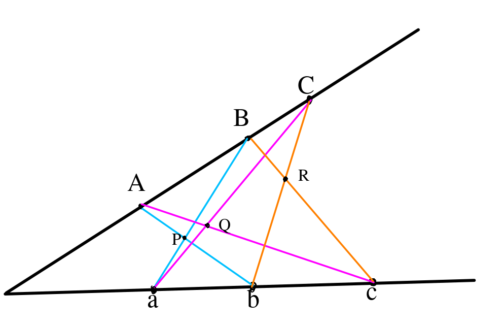

Solving SAT
Siddhartha Gadgil
Department of Mathematics
Indian Institute of Science
Bangalore
The $N-$Queens problem
- The $N-$queens puzzle is the problem of placing $N$ chess queens on an $N\times N$ chessboard so that no two queens threaten each other.
- Thus, a solution requires that no two queens share the same row, column, or diagonal.
- We formulate this as a so called Boolean satisfiability (SAT) problem.
- A SAT solver solves SAT problems.
- A very large class of problems can be formulated as SAT problems.
$N$-Queens as SAT
- We associate to each square a boolean variable $Q_{i,j}$ which is true iff the square is occupied.
- We construct logical formulas for the constraints of the $N-$queens puzzle from the $Q_{i,j}$'s using operators $\neg$ (not), $\vee$(or) and $\wedge$(and).
- For example, the $i$th row has a queen is the formula $Q_{i,1}\vee Q_{i,2}\vee\dots\vee Q_{i,n}$
- Similarly, pairs of queens not threatening each other gives formulas such as $\neg Q_{1, 1}\vee \neg Q_{2, 2}$.
SAT Problems
- We are given finitely many boolean variables $P$, $Q$, ... and finitely many constraints on them.
- Constraints are logical statements built from the variables using logical operators such as $\neg$ (not), $\vee$(or), $\wedge$(and), $\Rightarrow$(implies) and $\Leftrightarrow$ (equivalent).
- The SAT (boolean satisfiability) problem asks whether we can assign truth values to these (i.e., declare each of $P$, $Q$ , ... to be $true$ or $false$) so that all the constraints are satisfied.
SAT and $P\overset{?}=NP$
- Given a solution to a SAT problem, it is easy to see that it satisfies all the constraints.
- However, finding a solution may be hard.
- Algorithmic problems that can be solved in polynomial time form the class $P$ (polynomial).
- Algorithmic problems whose solution, if it exists, can be checked in polynomial time form the class $NP$ (non-deterministic polynomial).
- A fundamental question is whether $P = NP$.
Cook-Levine theorem
- The Cook-Levine theorem from the early 1970s showed that if SAT can be solved in polynomial time then so can every problem in $NP$.
- There are a large class of problems that are known to be $NP$, making $P=NP$ a very important question.
- In practice, computer scientists have focussed efforts on making practically fast SAT solvers, which are used to solve (components of) many different problems by mapping them to SAT.
CNF
- A valuation is an assignment of truth values to the variables of a problem.
- If $P$ is a (boolean) variable, the formulas $P$ and $\neg P$ are called literals.
- A clause is a disjunction $l_1\vee l_2\vee\dots\vee l_k$ of literals.
- A clause is satisfied by a valuation if and only if it contains a literal that is true.
- A CNF is a conjunction of clauses, i.e., a set of clauses which must all be true.
Rewriting as CNF
- Any formula can be rewritten as a CNF formula to which it is equivalent.
- We first rewrite $A\Rightarrow B$ as $\neg B\vee A$ and $A\Leftrightarrow B$ as $(\neg A\wedge \neg B)\vee (A\wedge B)$ to eliminate operators other than $\vee$, $\wedge$ and $\neg$.
- Next we use $\neg(A \vee B) = \neg A \wedge \neg B$ and $\neg(A \wedge B) = \neg A \vee \neg B$ recursively to get a combination of literals using $\vee$ and $\wedge$ only.
- Finally, using the distributivity property $A \vee (B\wedge C)= (A\vee B)\wedge (A \vee C)$ recursively we get a formula in CNF.
Tautologies and Contradictions.
- Since $l\vee l = l$, we can assume that no literal appears more than once in a clause.
- If a clause contains both $P$ and $\neg P$ for some variable $P$, then this clause is always true, i.e., is a tautology.
- We assume that there are no tautologies or repeated literals.
- An empty clause is a contradiction, i.e., it is always false.
Resolution
-
Given clauses $C = P\vee l_1\vee l_2\vee \dots\vee l_n$ and $C' =
\neg P\vee l'_1\vee l'_2\vee \dots\vee l'_{n'}$ we
deduce $l_1\vee l_2\vee \dots\vee l_n\vee l'_1\vee l'_2\vee \dots\vee l'_{n'}$;
- If $P$ is false, $C \implies l_1\vee l_2\vee \dots\vee l_n$
- If $P$ is true, as $C'\implies l'_1\vee l'_2\vee \dots\vee l'_{n'}$
- In both cases, we have $l_1\vee l_2\vee \dots\vee l_n\vee l'_1\vee l'_2\vee \dots\vee l'_{n'}$.
- This deduction is called Resolution.
- Resolution is refutation complete (for predicate calculus) by a theorem of Davis-Putnam.
The Davis-Putnam algorithm
- Pick a variable $P$ and assign to it, say, $true$.
-
We recursively seek solutions with $P$ true, by considering a problem with fewer variables.
- Any clause containing $P$ is true, so can be dropped.
- Any clause of the form $\neg P\vee l_1\vee\dots\vee l_n$ (up to reordering) is true if and only the clause $C =l_1\vee\dots\vee l_n$ is true.
- Any clause containing neither $P$ nor $\neg P$ is unchanged.
- The base case for the recursion is where we have no variables.
- the set of clauses is either empty or just the empty clause.
- this gives a solution or a contradiction.
- Suppose we (recursively) have a solution with $P$ being $true$ we get a solution.
- Otherwise we consider the associated problem with $P$ false.
- If the second associated problem has a solution, we get a solution, otherwise a contradiction.
The DPLL algorithm
- This improves on the DP algorithm by often considering only one branch.
- If some clause is a unit, i.e., either $P$ or $\neg P$ for a variable $P$, we assign the appropriate value to $P$.
- This can lead to a cascade.
- If a variable $P$ is pure, i.e., only one of $P$ and $\neg P$ appears in all clauses, we can assign $P$ the value that appears.
- In both algorithms, if there is no solution, we can deduce the empty clause by resolution.
SAT Solver-Prover in Lean 4
-
A dependently typed language like Lean 4 or Idris
makes possible,
as I implemented with SATurn, a program that outputs one of
- a solution together with a proof that this is a solution, or
- a proof that there is no solution.
- Furthermore, the compiler verifies that the program terminates for any valid input, and has correct output of one of the above two forms.
- This was the first time in my experience that such a complex program ran correctly straight away.
Boolean Pythagorean triples
- Problem: Is it possible to colour the positive integers either red or blue, so that if three integers $a$, $b$, $c$, satisfy $a^{2}+b^{2}=c^{2}$, they are not all the same colour?
- By a compactness argument if there is such a colouring up to $N$ for all $N$ then there is such a colouring of all the natural numbers.
- Marijn Heule, Oliver Kullmann and Victor W. Marek showed using a SAT solver that such a colouring is only possible up to the number 7824.
SMT Solvers
Z3 Demo: Sudoku

Euclidean Geometry via SMT?
- In the 1950s, Tarski proved that whether a collection of polynomial equations and inequations has solutions that are real numbers is decidable.
- Statements in Euclidean geometry can be translated to such problems.
- Tarski’s algorithm has been greatly improved, and algorithms of a more algebraic nature have also been developed, improved and implemented.
- However, I could not find any examples of using SMT solvers for such problems.
Pappus hexagon theorem
Theorem: $P$, $Q$ and $R$ are collinear.
- Points with coordinates $(x_1, y_1)$, $(x_2, y_2)$ and $(x_3, y_3)$, which we assume to be distinct, are collinear if and only if $(y_2 - y_1)(x_3 - x_1) = (y_3 - y_1)(x_2 - x_1).$
- As a warm up, we show that for $P= (x, y)$, $P$, $O=(0, 0)$ and $-P$ are collinear.
- To do this, we seek $x$ and $y$ so that $P$, $O$ and $-P$ are not collinear, and check for solutions.
- Indeed Z3 and CVC4 concluded instantly that there is no solution, i.e., the points are collinear.
- We scale and rotate to obtain nice coordinates
- We can take $a=(1, 0)$, $b= (1 + u, 0)$, $c = (1 + u + v, 0)$ with $u, v > 0$.
- Let $A = (x_A, y_A)$, then $B = (x_A(1+ U), y_A(1 + U))$ and $C = (x_A(1+ U + V), y_A(1 + U + V))$ with $U, V, y_A > 0$.
- We let $P=(P_x, P_y)$, $Q=(Q_x, Q_y)$ and $R= (R_x, R_y)$, giving $12$ variables in all.
- We get $6$ equations for collinearity, e.g. of $A$, $P$ and $b$.
- We also have various positivity inequations.
- We negate the equation for $P$, $Q$ and $R$ being collinear and ask if there is a solution.
- Unfortunately when I ran Z3 with this system it did not give a result.
- I blogged about this formulation and result.
- A couple of days later Anand Rao Tadipatri emailed me that he had got Z3 to prove Menelaus’s Theorem along similar lines.
- Strangely, I could not replicate his result.
- It turns out that Z3 can solve both theorems if only asked for an answer, but neither if asked for a proof.